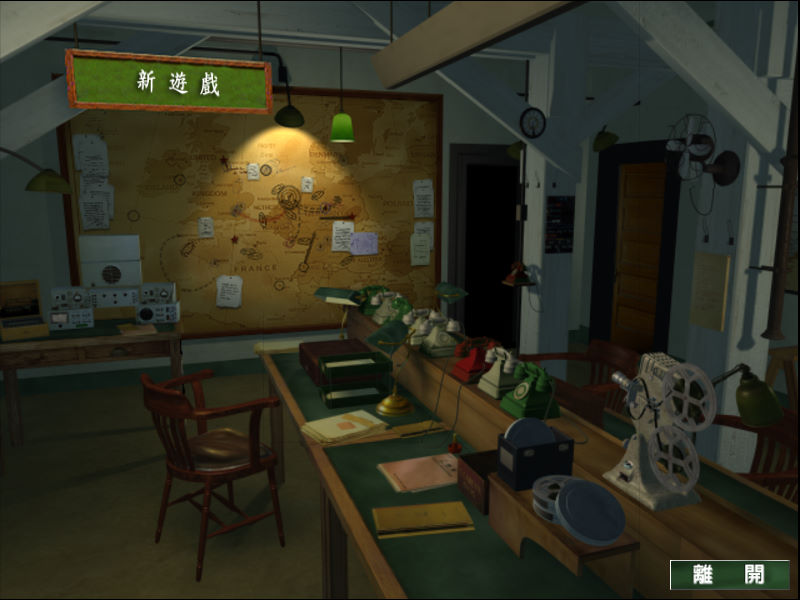
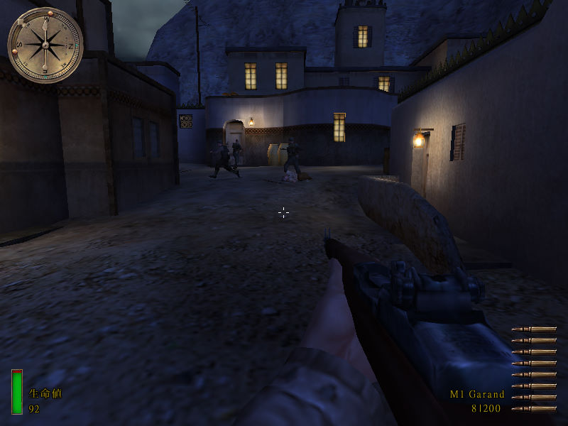

名稱：榮譽勳章：反攻諾曼第／聯合襲擊／重返諾曼第 (Medal of Honor: Allied Assault，中文／英文版)
簡介：2015公司2002年出品的第一人稱射擊遊戲，由EA代理發行。同年推出「諾曼第大空降／
奇襲先鋒／先頭部隊（Spearhead）」資料片，2003年再推出「突出重圍／突破防線
（Breakthrough）」資料片 [待補]。


保護：主程式為光碟SafeDisc 2.51+序號（5000-0000000-0000000-5068）
諾曼第大空降資料片為光碟SafeDisc 2.80+序號（5000-0000000-0000000-5039）
突出重圍資料片為光碟SafeDisc 2.90+序號（L5KB-32WY-B6G5-6747-YQ49）
備註：繁中版主程式有2002/1/10和2004/3/4兩種版本光碟，但其實內容都是相同的。
檔案：MOHAA_TCPatch1.11.rar = 繁中版主程式1.11更新檔
MOHAAS_TC211.rar = 繁中版資料片1諾曼第大空降2.11更新檔
MOHAAS_TC215.rar = 繁中版資料片1諾曼第大空降2.15更新檔
MOHAAB_Patch2.40.rar = 英文版資料片2突出重圍2.40更新檔
nocd_cht_111.rar = 繁中版主程式1.11免光碟檔
nocd_eng_100.rar = 英文版主程式1.00免光碟檔
nocds_cht.rar = 繁中版資料片1諾曼第大空降免光碟檔
nocdb_cht.rar = 繁中版資料片2突出重圍免光碟檔